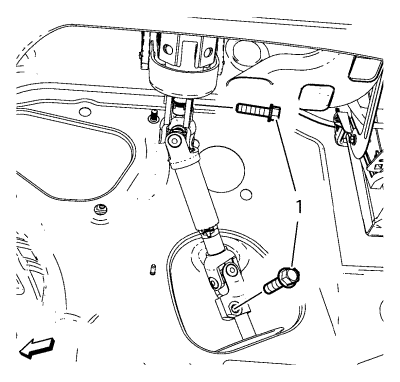
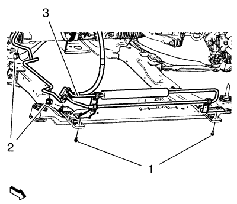
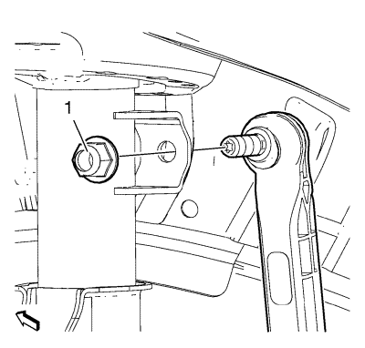
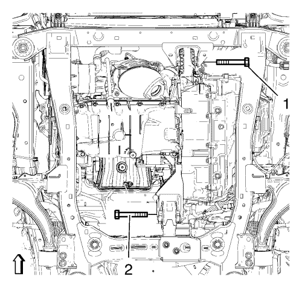

Sustitución del bastidor de la suspensión del tren anterior y del tren motriz
Herramientas especiales
| • | CH 904 Bastidor inferior |
| • | CH 49289 Adaptador de centrado |
Si desea informarse sobre herramientas regionales equivalentes, consultar Herramientas especiales .
Procedimiento de desmontaje

- Sostenga el radiador y el condensador desde la parte superior usando las lengüetas situadas a cada lado del condensador.
- Desmonte el perno inferior del árbol intermedio de la dirección (1).
- Levante el vehículo usando un elevador. Consultar Elevación y soporte en alto del vehículo .
- Desmonte los conjuntos de neumático y llanta. Consultar Desmontaje y montaje de la rueda y el neumático .
- Desmonte el tubo flexible de escape. Consultar
Sustitución del tubo flexible de escape : 1.6L LXT → 1.6L LDE, LXV y 1.8L 2H0 → 2.0L Diésel LLW .
- Retirar el protector de salpicaduras del habitáculo frontal. Consultar Sustitución del protector de salpicaduras del habitáculo frontal .
- Desmonte el aislamiento del compartimento delantero, si el vehículo lo posee. Consultar Sustitución del aislamiento del compartimento delantero .

- Desmonte el mazo de cables (2) del sensor de velocidad de la rueda de ambos lados del bastidor.
Desmonte los seguros (3) del mazo de cables del bastidor y del brazo de apoyo inferior.
- Desmonte el mazo de cables (1) del radiador del bastidor.
Desmonte los seguros (4) del mazo de cables del bastidor.

- Desmonte el perno (1) del tubo de refrigeración del fluido de la servodirección, extráigalo (2) y asegure el tubo (3) de refrigeración del fluido de la servodirección al vehículo.
- Desmonte las rótulas inferiores de las manguetas. Consultar Sustitución del brazo de apoyo inferior .

- Desmonte la tuerca (1) de la barra estabilizadora del refuerzo.
- Desmonte las barras de acoplamiento exteriores y las tuercas de las barras de acoplamiento de las manguetas. Consultar Sustitución la barra de acoplamiento exterior del varillaje de la dirección .

- Desmonte los pernos delantero (1) y trasero (2) del soporte del alojamiento del cambio.

- Levante el marco CH 904 y el adaptador CH 49289 con el elevador hidráulico hasta que entren en contacto con el marco.
- Gire las ruedas delanteras hasta la posición recta y asegúrese de que el volante no se mueve.

- Extraiga los tornillos (1) del tubo flexible de entrada y salida del mecanismo de la servodirección. Extraiga el tubo flexible de entrada y salida (2) del mecanismo de la dirección (3).

Nota: Los pernos de posicionado (2 ,3) del adaptador CH-49289 DEBEN acoplarse en los orificios del bastidor del tren de rodaje.
- Compruebe si se necesita realizar la alineación de las ruedas.
Extraiga los pasadores de posicionamiento (1) y trate de introducirlos en los orificios de los bajos.
Si los pasadores guía no se pueden insertar, se debe seguir Medición de la alineación de las ruedas después de montar el bastidor de la cadena cinemática.
- Afloje el tornillo del soporte del amortiguador del parachoques delantero. Consultar Sustitución del soporte del elemento de absorción de energía del parachoques delantero. .
- Asegure el mecanismo de la servodirección al vehículo.

- Desmonte los pernos delanteros del bastidor (1).
- Desmonte los pernos traseros del bastidor (2).
- Desmonte los refuerzos (3) del bastidor.
- Desmonte el bastidor (4) del vehículo.
- Desmonte los siguientes componentes si va a sustituir el bastidor:
| • | Los soportes del radiador. |
Procedimiento de montaje
- Monte los siguientes componentes en el tren motriz y el bastidor si se desmontan:
| • | Los soportes del radiador. |
Nota: Los pasadores de posicionamiento (1) del adaptador CH 49289 DEBEN estar extendidos para poder guiarlos en los agujeros de los bajos.
- Eleve el bastidor (4) con cuidado, usando el adaptador CH 49289.
- Monte los refuerzos (3) del bastidor.
Precaución:Consulte Precaución con las fijaciones en la sección Prólogo.
- Monte los pernos traseros del bastidor (2) y apriételos a 160 N·m (118 lib. pie).
- Monte los pernos delanteros del bastidor (1) y apriételos a 160 N·m (118 lib. pie).
- Desmonte el soporte del mecanismo de la servodirección.
- Monte el perno del soporte del amortiguador del parachoques delantero. Consultar Sustitución del soporte del elemento de absorción de energía del parachoques delantero. .
- Monte el perno (1) del alojamiento delantero del cambio y apriételo a 100 N·m (74 lib. pie).
- Monte el perno (2) del soporte del alojamiento trasero del cambio y apriételo a 100 N·m (74 lib. pie).
- Monte las barras de acoplamiento exteriores y las tuercas de las barras de acoplamiento a las manguetas. Consultar Sustitución la barra de acoplamiento exterior del varillaje de la dirección .
- Monte la barra de acoplamiento del varillaje de la dirección. Apriete la tuerca de la barra de acoplamiento del varillaje de la dirección a 35 N·m (26 lib. pie).
- Monte las rótulas inferiores a las manguetas. Consultar Sustitución del brazo de apoyo inferior .
- Monte el tubo de refrigeración (3) del fluido de la servodirección, monte el perno (1) del tubo de refrigeración del fluido de la servodirección y conéctelos (2). Apriete el perno del tubo de refrigeración del fluido de la servodirección a 9 N·m (80 lib. pulg.).
- Monte el mazo de cables (2) del sensor de velocidad de la rueda a ambos lados del bastidor.
Acople los seguros (3) al mazo de cables del bastidor y al brazo de apoyo inferior.
- Monte el mazo de cables (1) del radiador al bastidor.
Acople los seguros (4) del mazo de cables al bastidor.
- Monte el tubo flexible de entrada y salida (2) en el mecanismo de la dirección (3).
- Monte los tornillos (1) del tubo flexible de entrada y salida del mecanismo de la servodirección y apriételos a 11 N·m (97 lib. pulg.).
- Monte el tornillo inferior del husillo intermedio de la dirección (1) y apriételo a 34 N·m (25 lib. pie).
- Desmonte el soporte del radiador y del condensador.
- Baje el vehículo en el elevador. Consultar Elevación y soporte en alto del vehículo .
- Instalar los conjuntos de rueda y neumático. Consultar Desmontaje y montaje de la rueda y el neumático .
- Monte el tubo flexible de escape. Consultar
Sustitución del tubo flexible de escape : 1.6L LXT → 1.6L LDE, LXV y 1.8L 2H0 → 2.0L Diésel LLW .
- Monte la cubierta inferior de apertura del panel del parachoques delantero. Consultar Sustitución de la cubierta inferior de abertura del panel del parachoques delantero .
- Monte los protectores contra salpicaduras del motor. Consultar Sustitución del protector de salpicaduras del habitáculo frontal .
- Monte el aislamiento del compartimento delantero, si el vehículo lo posee. Consultar Sustitución del aislamiento del compartimento delantero .
- Si sustituye el bastidor, compruebe la alineación de las ruedas. Consultar Medición de la alineación de las ruedas .
| © Copyright Chevrolet. Reservados todos los derechos |